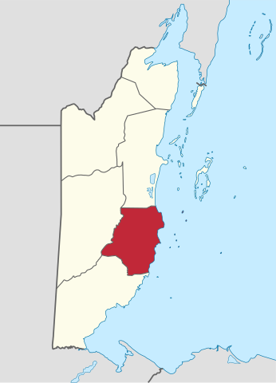

District Controls
Click any district to select it. Only one district can be visible at a time.
Click the same district again to deselect it.
 Cayo District
Orange Walk District
Toledo District
Corozal District
Stann Creek District
Belize District
Cayo District
Orange Walk District
Toledo District
Corozal District
Stann Creek District
Belize District